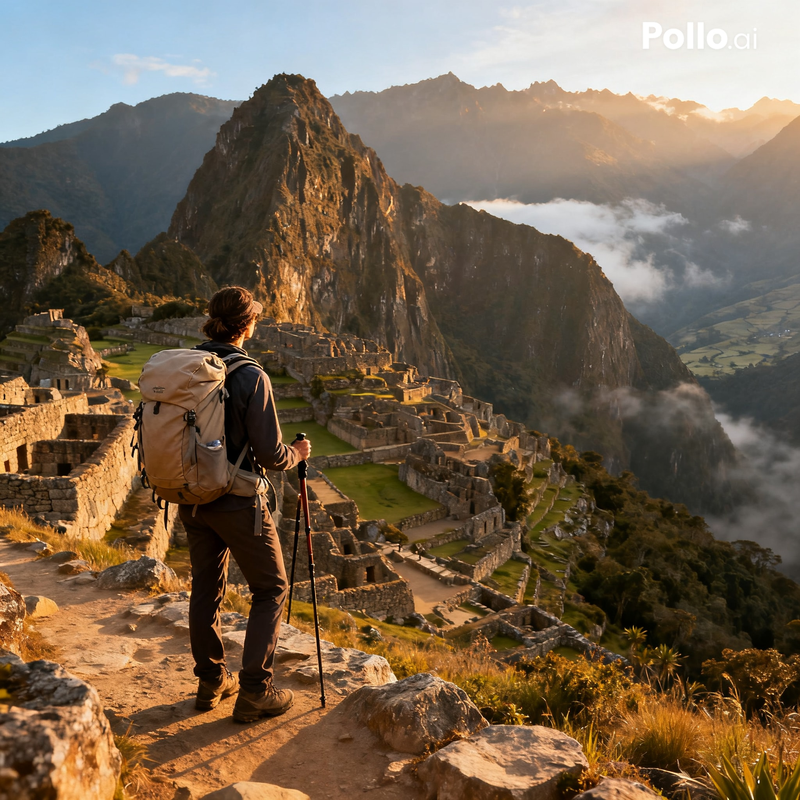
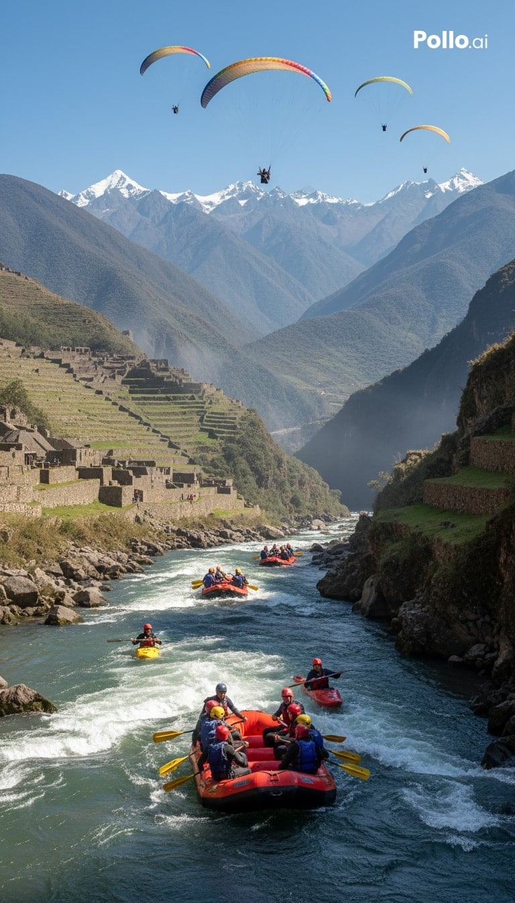
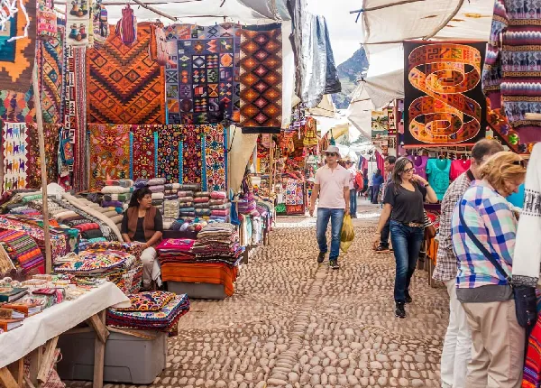
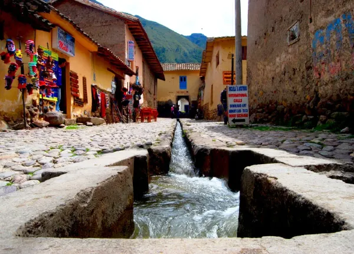
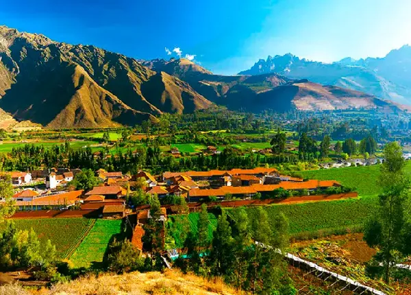
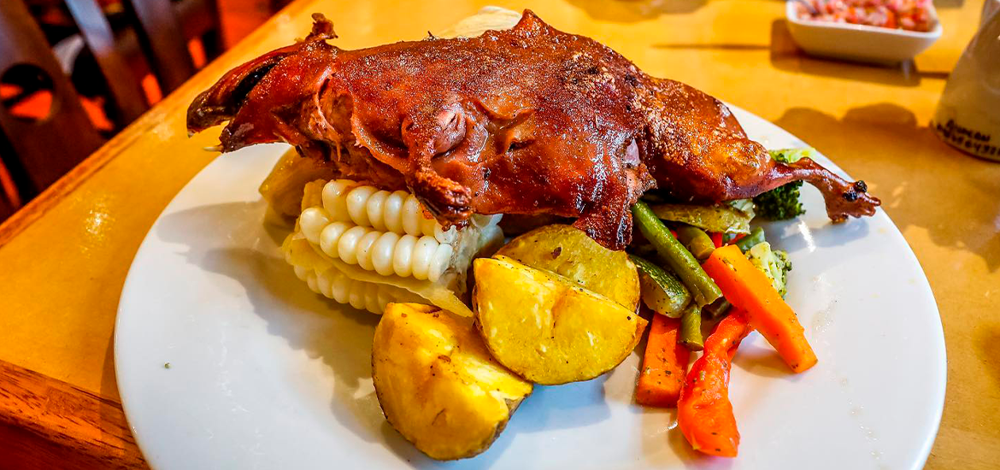
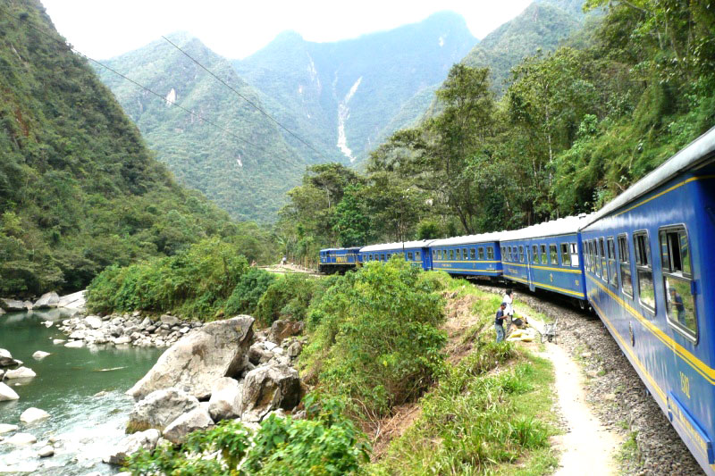
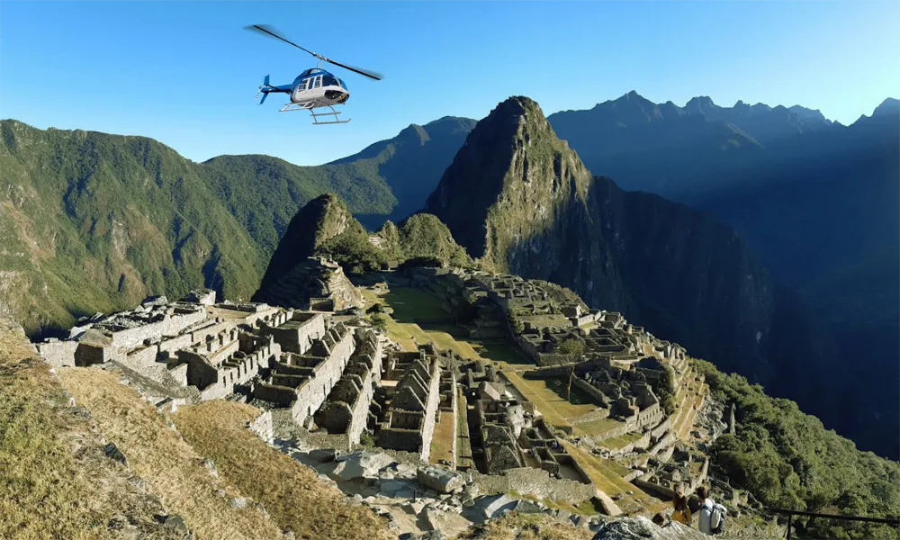
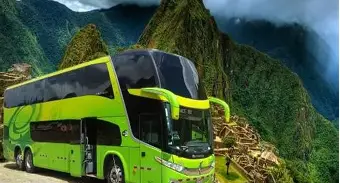

Cusco

- Machu Picchu ashlar — blocks cut to fit perfectly.
- Over 200 structures covering 81,000 hectares of mountain terrain.
Built around 1450 during the reign of the Inca emperor Pachacuti, Machu Picchu sits at 2,430 metres above sea level in the Eastern Cordillera of southern Peru, about 80 km northwest of Cusco. Its stones were cut with such precision that no mortar was needed — and during earthquakes, they shift and fall back into place, a remarkable feat of engineering on a site built directly over two fault lines.
Abandoned roughly a century later during the Spanish conquest, the citadel remained largely unknown to the outside world until 1911, when historian Hiram Bingham brought it to international attention. Today it is a UNESCO World Heritage Site and one of the New Seven Wonders of the World, receiving over 1.5 million visitors annually.


Destinations



Pisac, Ollantaytambo ,Urubamba
Cuisine


Chicharron, Choclo con queso and Cuy Meat
Getting around



train to Machu Picchu,flying and bus to nearby adventures.